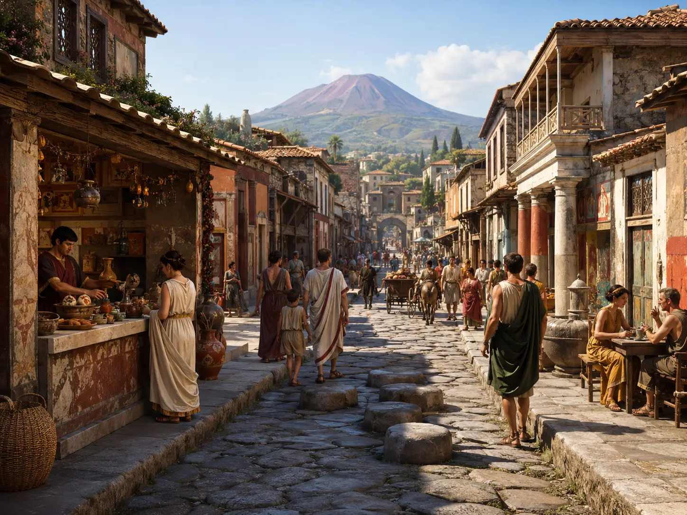
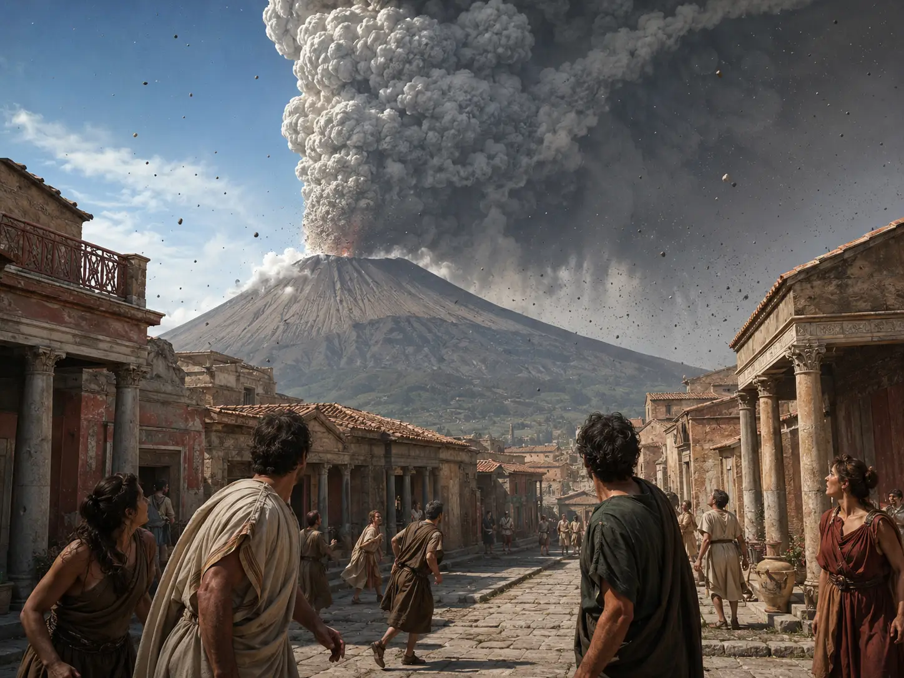
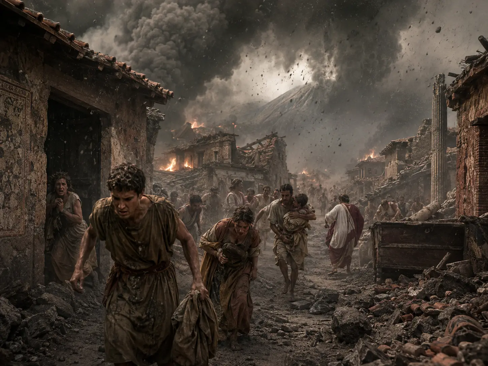
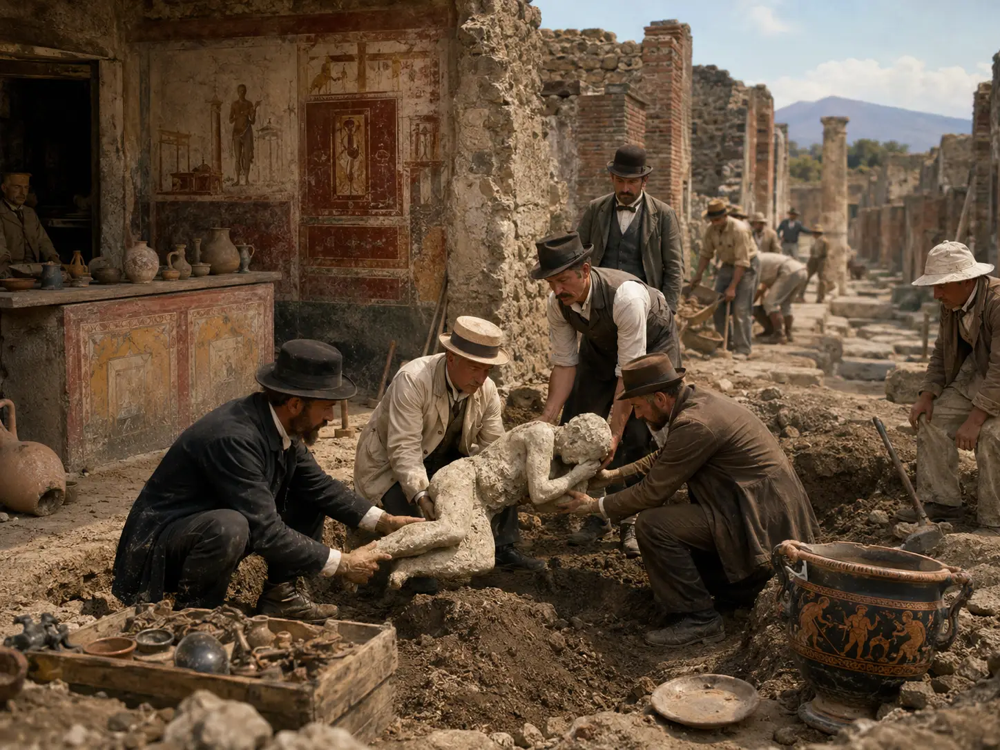

1. Pompeii Before the Disaster
Today, the name Pompeii is almost inseparable from destruction. Mention the city and the first images that come to mind are ash-covered streets, plaster casts of victims and Mount Vesuvius rising ominously in the background. But before the eruption of 79 CE transformed Pompeii into one of archaeology’s most extraordinary time capsules, it was a living city shaped by centuries of change.
Located in Campania, near the Bay of Naples, Pompeii had developed under the influence of different peoples and cultures long before it became part of the Roman world. Its urban history stretched back centuries, with Greek, Etruscan and Samnite influences all leaving traces on the settlement. By the second century BCE, the city had entered what the Archaeological Park of Pompeii describes as a kind of “golden century”: trade expanded across the Mediterranean, public buildings multiplied, temples were renovated and the town increasingly acquired the monumental appearance that visitors can still recognize today.
By the first century CE, Pompeii was firmly integrated into Roman society, yet it was not Rome in miniature. It was a prosperous regional city with its own political rivalries, businesses, religious traditions and social hierarchy. Its streets connected residential neighborhoods with workshops, markets, temples and entertainment districts, while roads leaving the city linked it to the surrounding countryside and commercial routes. The fertile land around Vesuvius supported agriculture, including vineyards, while trade and manufacturing helped sustain the urban economy. Archaeology has revealed evidence of textile processing, food production, shops and many other occupations woven directly into residential areas.
At the heart of Pompeii stood the Forum, the center of civic life. This large public square was surrounded by some of the city’s most important buildings, including temples, government spaces, the Basilica and the macellum, or market. Politics, religion, justice and commerce overlapped there. Magistrates conducted public affairs, merchants did business, religious ceremonies reinforced community identity, and citizens gathered to hear announcements or settle disputes. The Forum was not simply a monumental plaza: it was one of the places where the city functioned as a city.
Beyond the Forum, everyday life spilled into the streets. Via dell’Abbondanza, one of Pompeii’s principal arteries, was lined with workshops, businesses and food-and-drink establishments known as thermopolia. Some contained large jars built directly into their counters, and customers could stop for simple meals, wine and other refreshments. The comparison with modern fast food is imperfect, but it captures something important about Pompeian life: many activities happened outside the home, amid constant movement, commerce and conversation.
The homes themselves reveal enormous differences in wealth and status. Some Pompeians lived in impressive domus decorated with elaborate frescoes, mosaics, gardens and rooms designed for entertaining guests and displaying social prestige. A traditional elite house might contain an atrium, bedrooms, a dining room, an office and a columned garden. Other inhabitants lived and worked in far more modest conditions, sometimes in spaces connected directly to shops or workshops. Pompeii was therefore not a city populated only by wealthy Romans lounging in luxurious villas; its surviving buildings reflect a much broader society of elites, merchants, craftspeople, workers and servants whose lives constantly intersected.
Entertainment was equally important. Pompeii possessed theatres, public baths, exercise spaces and an amphitheatre. The Large Theatre could hold around 5,000 spectators, while the smaller Odeon accommodated roughly 1,500 to 2,000 and was used for musical and poetic performances. Seating itself reflected the social order: the best positions were reserved for magistrates and prominent citizens, while other sections accommodated different levels of society. Public entertainment did not erase Pompeii’s hierarchy; it placed that hierarchy on display.
The streets also preserve something even more intimate: the voices of ordinary people. Graffiti survives on walls throughout Pompeii—political messages, advertisements, jokes, insults, declarations of love and casual remarks scratched or painted by people who never imagined their words would be read almost two thousand years later. Together with household objects, shop counters, cooking equipment, paintings and architectural remains, these traces are why Pompeii offers such an unusually detailed picture of Roman daily life. UNESCO describes Pompeii and the neighboring sites buried by Vesuvius as providing an unparalleled view of society at a specific moment in the ancient world.
And yet the Pompeii of 79 CE was not a perfectly preserved city peacefully awaiting disaster. It had already suffered serious damage from a powerful earthquake in 62 CE, and reconstruction was still reshaping buildings and businesses years later. Workers, architects, painters and craftsmen were repairing and transforming the city when another geological event began to approach—one far beyond anything they were prepared to confront.
Pompeii was alive, busy and changing.
That is what makes what happened next so extraordinary.
2. The Warning Signs Nobody Understood
Seventeen years before Pompeii was buried, the city had already experienced a catastrophe.
In 62 CE, a powerful earthquake struck Campania and caused extensive destruction in Pompeii. The Roman philosopher Seneca, writing shortly after the disaster, described the city as having been devastated and reported serious damage elsewhere in the region, including Herculaneum. Tacitus would later record that Pompeii had largely collapsed. Modern archaeology confirms the scale of the event: buildings throughout the city were damaged, repaired, rebuilt or given entirely new uses in the years that followed.
The earthquake left marks that were still visible when Vesuvius erupted in 79 CE. Temples, houses, shops and public buildings underwent reconstruction, and in some cases the work appears never to have been completed. At the Temple of Venus, for example, archaeological evidence points to restoration work that was still underway when the eruption abruptly ended the city’s history. The disaster of 62 was therefore not merely a distant memory: Pompeii was still physically recovering from it seventeen years later.
From a modern perspective, it is tempting to interpret the earthquake as an obvious warning that Vesuvius was waking up. For the people living there, however, the situation was far less clear.
Earthquakes were a familiar feature of Campania. The inhabitants had no seismographs, no volcanic monitoring network and no scientific theory capable of showing that movements beneath the mountain might signal an approaching eruption. Ancient scholars did attempt to explain earthquakes and volcanic phenomena, and some writers even recognized that Vesuvius showed evidence of ancient fire. But recognizing that a landscape had a fiery past was very different from understanding that a catastrophic explosive eruption was approaching. There was no practical system for predicting what Vesuvius was about to do.
The most remarkable evidence comes from Pliny the Younger, whose surviving letters provide the only detailed eyewitness account of the eruption. Writing years afterward to the historian Tacitus, Pliny recalled that slight earthquakes had occurred for several days before the disaster. Yet he explained that they caused little alarm precisely because such tremors were common in Campania.
That detail changes the way the final days of Pompeii should be imagined. The population was not necessarily ignoring some unmistakable signal of impending destruction. What modern readers recognize as a possible volcanic precursor could easily have seemed to the inhabitants like another episode of a phenomenon they had experienced before. A shaking floor, rattling objects or a tremor during the night did not automatically mean that a mountain nearby was about to explode.
Even the major earthquake of 62 had not taught them that lesson. Pompeii had survived it. Buildings had fallen, people had rebuilt, businesses had reopened and daily life had continued. In a sense, the city’s recovery may have reinforced the idea that earthquakes were dangerous but survivable events rather than warnings of something much larger.
There is also an important distinction between what we know after the eruption and what Pompeians could have known before it. Modern volcanology allows scientists to connect patterns of earthquakes, ground deformation, gas emissions and changes within a volcanic system. The inhabitants of Roman Campania had none of those tools. The tremors preceding the eruption only became “warning signs” once historians and scientists knew what happened next.
And as the earthquakes continued, life in Pompeii appears to have carried on.
People worked in shops. Food was prepared. Buildings were repaired. Political messages remained painted on walls. Travelers moved through the surrounding countryside.
Then the warning signs stopped being subtle.
Vesuvius began to erupt.

3. The Eruption Begins
At some point around midday in 79 CE, Mount Vesuvius finally broke its silence.
For centuries, the eruption was traditionally dated to 24 August, following the surviving manuscript tradition of Pliny the Younger’s account. Archaeological discoveries, however, have strengthened the case for a later date in autumn, probably around 24 October. The Archaeological Park of Pompeii now acknowledges this uncertainty, referring to the eruption as having occurred on 24 August or October. What is not in doubt is what followed: during the early afternoon, Vesuvius entered an explosive phase that would transform the landscape around the Bay of Naples.
Our most famous description comes from Pliny the Younger, who was staying at Misenum on the opposite side of the bay. He later recalled that his mother drew attention to an enormous cloud of unusual shape rising into the sky. From their position they initially could not tell which mountain was producing it, but it was soon identified as Vesuvius. Pliny compared the cloud to a pine tree: a long vertical “trunk” rose upward before spreading into branches high above the mountain.
That description became so important that volcanologists eventually used Pliny’s name for an entire class of explosive events. A Plinian eruption produces a sustained column of volcanic gases, ash and fragmented magma driven high into the atmosphere. Modern reconstruction of the 79 CE eruption identifies the development of just such a sustained column at approximately 1 p.m., sending vast quantities of pumice and ash into the sky.
What went up soon began to come down.
Winds carried much of the falling material toward the southeast—directly toward Pompeii. Pumice, lapilli and ash began raining over the city. At first, the lightweight pumice may not have looked like the most lethal part of the disaster. But the eruption did not stop. Hour after hour, volcanic debris accumulated on streets, courtyards and rooftops. Archaeological reconstruction indicates that the pumice-fall phase at Pompeii lasted roughly 18 to 19 hours, beginning with white pumice and later changing to grey pumice as the eruption evolved.
For the inhabitants, this created an increasingly dangerous dilemma. Remaining indoors offered protection from falling material, but every layer of pumice added more weight to roofs already weakened in some cases by earthquakes and previous structural damage. Going outside meant attempting to move through streets while debris continued falling from above. The Archaeological Park records that the accumulating pumice eventually reached around two metres in some areas during this stage, while roof collapses caused some of the first deaths.
The surviving account of Pliny the Elder shows how rapidly conditions deteriorated around the bay. Initially fascinated by the phenomenon, the Roman scholar and naval commander prepared a vessel so that he could observe it more closely. His plans changed when he received a plea for help from Rectina, whose villa lay near the threatened coast. He then ordered ships to be launched in an attempt to rescue people. As they approached the affected area, Pliny the Younger records that ash fell increasingly thickly, together with pumice and heat-blackened stones.
Yet the first phase of the eruption also provided something that would soon disappear: time.
The destruction of Pompeii was not instantaneous. The long pumice fall created a window during which many inhabitants could attempt to flee, and archaeological evidence makes clear that numerous people did escape the city. Others remained—whether because they delayed, hoped the eruption would weaken, sought shelter, protected possessions, could not leave easily, or made decisions whose reasons can no longer be reconstructed with certainty.
As the afternoon turned into evening and then night, Pompeii was slowly disappearing beneath volcanic debris. Streets became increasingly difficult to cross. Buildings shook under continuing seismic activity. Roofs began failing beneath the growing weight above them. Darkness, ash and falling stone transformed familiar neighborhoods into an environment that became more dangerous with every passing hour. The pumice alone was already capable of killing.
But the eruption had not yet reached its deadliest phase.
Above Vesuvius, the enormous eruptive column was becoming unstable.
And when it finally began to collapse, Pompeii would face something far more devastating than falling stone.
4. The Final Hours of Pompeii
For hours, Pompeii had endured a relentless rain of pumice and ash. Roofs had collapsed, streets were buried beneath volcanic debris and many inhabitants had already escaped. Those who remained had survived the first great phase of the eruption.
For a brief moment, they may even have believed the worst was ending.
As the pumice fall weakened, however, the character of the eruption changed dramatically. The towering column above Vesuvius was no longer able to remain completely suspended. Portions of it began to collapse, generating pyroclastic density currents—fast-moving mixtures of hot gases, ash and volcanic particles that hugged the ground and spread outward from the volcano. Unlike the pumice that had fallen gradually from above, these currents could sweep across the landscape as dense, turbulent clouds.
Herculaneum, much closer to Vesuvius and situated on a different side of the volcano, experienced this deadly phase before Pompeii. While the prevailing winds had carried much of the pumice southeast toward Pompeii, sparing Herculaneum from the same enormous accumulation during the earlier hours, pyroclastic currents behaved very differently. They descended the volcano and overwhelmed Herculaneum with extraordinary intensity. Research on the site indicates conditions so severe that survival for those caught there was effectively impossible.
Pompeii still had more time.
But the city was becoming increasingly difficult to escape.
By then, thick deposits of pumice covered streets and courtyards. Some roofs and walls had already collapsed, while darkness and continuing tremors made movement hazardous. Recent archaeological and volcanological research has added another danger to this reconstruction: powerful earthquakes were occurring during the eruption itself. Pliny the Younger, observing events from Misenum, remembered that during the night the shaking became so violent that everything seemed to be overturning. By dawn, even carts standing on level ground could not remain still.
For Pompeii, these earthquakes were not merely background effects. A multidisciplinary study published in 2024 identified structural damage and injuries consistent with strong seismic shaking during the eruption, suggesting that earthquakes contributed to building collapses and deaths alongside the volcanic phenomena. The discovery complicates the traditional picture of Pompeii’s destruction: some inhabitants may have survived hours of falling pumice only to be killed when already weakened buildings collapsed around them.
Then came the pyroclastic currents.
The first currents generated during the collapse of the eruptive column did not necessarily penetrate every part of Pompeii with the same destructive force. The eruption developed through successive pulses, and the interaction between the moving clouds, the terrain and the city’s buildings produced complex effects. Eventually, however, a pyroclastic current powerful enough to sweep through Pompeii reached the city, filling spaces that had not already been buried by pumice and ash.
For anyone still trying to escape, the landscape offered little protection. Streets that had once connected houses, shops and public buildings were now buried beneath metres of debris. Visibility was drastically reduced. Structures were unstable. The air was filled with volcanic ash.
Some of Pompeii’s most famous victims appear to have been caught while attempting to flee. In the area now known as the Garden of the Fugitives, the remains of thirteen people were discovered together. Elsewhere, individuals were found in streets, houses and other spaces throughout the city. Their locations provide fragments of individual stories, but archaeology cannot always tell us exactly why each person remained so long or what decision they made in their final moments.
The approaching current did not resemble a river of lava. This distinction is essential. Lava was not what buried Pompeii. The principal agents of destruction were falling pumice and ash, structural collapse, earthquakes and, finally, pyroclastic density currents. These gas-and-particle clouds could travel rapidly across the ground and penetrate streets and buildings in ways a slowly advancing lava flow could not.
Exactly what happened to people caught in the final current is more complicated than the popular image suggests. The Archaeological Park of Pompeii describes a high-temperature pyroclastic flow striking the city at high speed and killing those who remained, while scientific studies have debated the relative importance of heat, ash inhalation and the duration and physical characteristics of the currents at Pompeii. One modern model estimated that the dilute current affecting Pompeii may have persisted for roughly 17 minutes, long enough for suspended ash to become lethal even where its mechanical and thermal effects were weaker than those experienced closer to Vesuvius.
That question—how the people of Pompeii actually died—deserves its own examination.
What is clear is that by the end of the eruption’s most destructive phases, the city that had been alive the previous morning had effectively vanished. Buildings projected only partially above layers of volcanic material. Streets had disappeared. Homes, shops, temples, objects and human remains lay buried beneath a succession of pumice and ash deposits that in parts of Pompeii reached several metres in thickness.
Pliny the Younger, watching the catastrophe from across the bay, described a darkness so complete that it was unlike an ordinary night. People cried out for relatives, prayed to the gods or believed that the world itself might be ending. His account was written from Misenum, not Pompeii, but it offers a rare human glimpse of the fear spreading through the region as Vesuvius continued to dominate the sky.
For the people still inside Pompeii, there would be no next morning in the city they knew.
But their final moments were about to leave behind something unprecedented in archaeology.

5. How Did the People of Pompeii Actually Die?
The most famous images from Pompeii seem to show people frozen at the exact instant of death: bodies curled on the ground, hands raised toward their faces, adults lying beside children. They have helped create one of the most persistent popular images of the disaster—that the inhabitants were suddenly engulfed by lava and somehow turned to stone.
That is not what happened.
Lava did not sweep through Pompeii, and the figures seen today are not petrified bodies. The city was overwhelmed primarily by falling pumice and ash, earthquakes, structural collapses and eventually pyroclastic density currents generated by Vesuvius. Even more importantly, there was probably no single cause of death shared by every victim. People died at different stages of a catastrophe that unfolded over many hours.
Some of the earliest fatalities likely occurred during the long pumice-fall phase. As volcanic material accumulated on rooftops, its increasing weight caused structures to collapse. Pompeii had also been repeatedly shaken by earthquakes, and recent research indicates that strong seismic activity during the eruption itself contributed to additional building failures. Individuals sheltering indoors could therefore be crushed by collapsing roofs, walls or masonry before the deadliest pyroclastic currents even reached the city.
For many of those who survived this stage, however, the decisive threat came later.
When the eruptive column above Vesuvius partially collapsed, pyroclastic density currents raced outward from the volcano. These were turbulent mixtures of volcanic particles and gas capable of producing extreme heat, dense concentrations of ash and dangerous physical forces. Anyone still inside Pompeii when the major currents reached the city faced an environment from which survival became extraordinarily difficult.
Exactly how those currents killed the Pompeians has been the subject of scientific debate.
One influential interpretation argues that the temperatures were sufficiently high to produce rapid lethal thermal shock. Experimental and forensic research published in 2010 concluded that exposure to temperatures of at least approximately 250°C at the peripheral areas reached by the surges could have been sufficient to cause immediate death, even for people sheltering inside buildings. The Archaeological Park of Pompeii similarly describes the final high-temperature pyroclastic flow as killing those who remained in the city through thermal shock.
Other research has emphasized that conditions at Pompeii were different from those closer to Vesuvius and that ash inhalation and exposure duration may also have been crucial. A 2021 numerical reconstruction estimated that a dilute pyroclastic current could have persisted around Pompeii for roughly 17 minutes. According to that model, even where temperatures and mechanical forces were not immediately fatal, breathing the extremely ash-rich atmosphere for that length of time could have made survival impossible.
This distinction becomes especially important when Pompeii is compared with Herculaneum. Herculaneum lay considerably closer to Vesuvius and experienced exceptionally hot pyroclastic currents. Studies of its victims have found evidence consistent with extremely rapid death from intense heat, and more recent research continues to reconstruct temperatures of several hundred degrees Celsius during the earliest deadly events there. Pompeii, farther from the vent, experienced different conditions, which is one reason scientists remain cautious about applying exactly the same mechanism of death to every victim at both sites.
Even within Pompeii itself, the evidence suggests multiple scenarios. Some people were indoors; others were caught outside. Some appear to have died during building collapses, while hundreds of victims are associated with the pyroclastic-current phase. A 2024 study notes that victims from that later phase are distributed almost equally between indoor and outdoor locations, illustrating how little protection buildings ultimately offered once the disaster reached its final stages.
The familiar poses of the Pompeian victims therefore should not automatically be interpreted as people slowly suffocating or consciously shielding themselves from approaching death. Body position after exposure to extreme heat, burial, decomposition and changes in the surrounding deposits can be difficult to interpret, and researchers have warned against reconstructing individual final moments solely from the appearance of the casts. Scientific studies of the casts continue to refine what can—and cannot—be confidently inferred from them.
What archaeology allows us to say with confidence is more complex than the popular legend.
Some people were killed by collapsing structures. Others survived the pumice fall only to encounter the pyroclastic currents. Heat, ash inhalation and the physical conditions inside those currents may all have contributed, with their relative importance varying according to location and circumstances.
And the people who died did not become stone statues.
Their bodies decomposed beneath hardened layers of volcanic material, leaving empty spaces where flesh and clothing had once been. Almost eighteen centuries later, archaeologists discovered that those cavities could be filled.
That accidental preservation would create the images of Pompeii that the entire world recognizes today.
6. The City Disappears for Centuries
When the eruption finally ended, Pompeii had ceased to exist as a functioning city. Streets, houses, temples and businesses lay beneath metres of volcanic material, while the surrounding landscape had been radically transformed. Yet the familiar idea that Pompeii simply vanished from human knowledge for almost seventeen centuries is not entirely accurate.
In the immediate aftermath of the catastrophe, the Roman authorities did not simply abandon Campania. Emperor Titus appointed officials to oversee relief efforts, and ancient sources indicate that property belonging to victims who had died without heirs was to be used in rebuilding the devastated communities. The scale of destruction, however, made the recovery of Pompeii itself impractical. Whatever could be salvaged was taken, and the buried city was eventually abandoned.
Survivors appear to have returned to recover possessions from their homes, and they were not the last people to enter the ruins. Over the following centuries, looters dug tunnels through the hardened volcanic deposits in search of valuables. Archaeologists have found evidence of these incursions in the form of holes broken through ancient walls and rooms stripped of objects long before modern excavations reached them.
The abandoned city also became a source of construction material. Marble, stone blocks, lead pipes and other reusable materials were removed from buildings, theatres, baths and public spaces. Pompeii was therefore not preserved because nobody ever touched it again. Parts of the ancient city were systematically robbed and recycled while most of its structures remained inaccessible beneath the volcanic layers.
Over time, the buried urban landscape became known as the Civita hill. Volcanic deposits covered much of the ancient city, although portions of upper structures still emerged in places. The area was no longer inhabited as Pompeii had been, but people returned to cultivate the land, use portions of it for burials and occasionally repurpose exposed ancient structures. The former city was gradually absorbed into a new landscape whose inhabitants did not fully understand what lay beneath their feet.
Then, near the end of the sixteenth century, the buried ruins were unexpectedly disturbed.
Count Muzio Tuttavilla commissioned the architect Domenico Fontana to construct a canal carrying water from the Sarno area toward industrial facilities at Torre Annunziata. The canal crossed the Civita hill—and therefore passed directly through sections of ancient Pompeii. During the work, structures, objects and inscriptions were encountered. Yet the significance of what had been exposed was not fully recognized, and no systematic investigation of the buried city followed.
Pompeii had effectively been touched again, but it had not yet been rediscovered in the modern archaeological sense.
That changed in the eighteenth century.
In 1738, Bourbon-sponsored investigations had begun at nearby Herculaneum, revealing spectacular remains beneath the volcanic deposits. Ten years later, attention shifted toward Civita. On 23 March 1748, excavations began in the area under the authority of Charles of Bourbon, ruler of Naples and Sicily. The people directing those first investigations did not initially know that they were excavating Pompeii; the ruins were at first believed to belong to the ancient city of Stabiae.
Only in 1763 was the identification of the site as Pompeii firmly established through archaeological evidence. From that point onward, the ancient city increasingly emerged from the volcanic layers that had concealed it for nearly seventeen centuries. Excavations continued in different phases under Bourbon rule, during the period of French control and after the Bourbon restoration, eventually becoming a continuing responsibility of the Italian state.
Those early excavations were very different from modern archaeology. The primary interest often lay in spectacular objects—statues, paintings, mosaics and valuable antiquities—that could enrich royal collections and impress visitors. Excavation methods gradually evolved, however, and Pompeii would become one of the places where archaeology itself changed. The work carried out from the eighteenth century onward exposed not only monumental buildings but streets, houses, workshops and ordinary objects on an unprecedented scale. The Archaeological Park describes the discovery of Pompeii as an important turning point in the history of archaeology, with new methods being tested there as exploration developed.
The discoveries quickly fascinated scholars, artists and wealthy travelers across Europe. Pompeii offered something fundamentally different from isolated Roman statues or ruined temples. Visitors could walk through an ancient urban environment: enter houses, follow streets, see paintings still attached to walls and encounter objects left in the places where Roman inhabitants had once used them. Excavations between 1748 and the nineteenth century helped transform Pompeii into an international cultural phenomenon and influenced the growing European fascination with classical antiquity and Neoclassical art.
Yet even after generations of excavation, Pompeii was never simply “finished.” Large sections remained buried, while previously excavated areas required constant conservation. The archaeological site visible today is therefore the product of more than two and a half centuries of excavation, interpretation, restoration and preservation rather than a single moment of discovery.
And as archaeologists removed the volcanic material, they began encountering something stranger than statues, frescoes or buildings.
They found empty spaces in the hardened ash.
Spaces shaped exactly like human bodies.

7. The Bodies That Became Famous Around the World
The people of Pompeii did not become statues.
What visitors see today are something far more unusual: casts created from the empty spaces their bodies left inside the volcanic deposits after death.
When pyroclastic material buried many of the victims, fine ash accumulated around their bodies and eventually hardened. Over time, skin, muscles, clothing and most other organic material decomposed, while the surrounding volcanic layer retained the shape that had once enclosed them. Bones could remain inside these cavities, but from the outside there was sometimes little indication that an almost perfect impression of a human being was hidden within the ground.
Excavators had encountered mysterious cavities in Pompeii long before anyone understood how to preserve them. The breakthrough came in 1863, under the direction of Italian archaeologist Giuseppe Fiorelli. Instead of simply excavating through one of the voids, Fiorelli developed a method of pouring liquid plaster into it. Once the plaster hardened and the surrounding volcanic material was carefully removed, the vanished body effectively reappeared—not as the original person, but as a three-dimensional reconstruction of the space that person had occupied at the moment of burial.
The result was extraordinary.
Faces emerged. Fingers became visible. Folds and impressions left by clothing could sometimes be distinguished. Sandals, belts and other details occasionally survived in negative form. Instead of studying only skeletons, archaeologists suddenly possessed representations of entire bodies, preserving posture and external features that would normally disappear soon after death.
Since Fiorelli perfected the technique, a little over one hundred human casts have been produced, even though the remains of more than one thousand victims have been discovered across Pompeii. The difference exists because the conditions required to create a cast were highly specific. Many victims left only skeletal remains, particularly those buried during the earlier pumice-fall phase, while suitable body-shaped cavities formed mainly where fine volcanic material hardened around individuals before their bodies decomposed.
The method was not limited to people.
The same principle has been used to recover the shapes of objects made from materials that disappeared over time, including wooden doors, furniture and other organic objects. At sites around Pompeii, casts have even preserved animals killed during the eruption. In excavations at Civita Giuliana outside the city walls, for example, archaeologists were able to cast the forms associated with horses buried by the volcanic deposits. The technique therefore became much more than a dramatic way to reconstruct victims; it became a method for recovering pieces of the ancient world that would otherwise have vanished completely.
Some casts became famous almost immediately.
Fiorelli displayed victims in the Museo Pompeiano, opened in the 1870s, while later excavations often left casts near the places where the bodies had originally been discovered. One of the best-known examples is the Garden of the Fugitives, where thirteen victims were found together. Their casts have become among the most recognizable human images associated with the disaster.
Yet their appearance has also encouraged generations of visitors to construct stories around them.
A body lying close to another might be interpreted as a husband and wife. An adult positioned near a child might immediately be described as a parent. Clothing, jewelry, body shape and posture encouraged assumptions about sex, status and relationships.
Modern science has shown how dangerous those assumptions can be.
A major 2024 ancient-DNA study analyzed genetic material recovered from skeletal remains preserved inside several Pompeian casts. The results challenged some long-standing interpretations of who these individuals were and how they were related. People traditionally presented as members of the same biological family were not necessarily genetically related, while genetic evidence also contradicted assumptions about the sex of certain individuals that had been based largely on appearance and position.
The lesson extends far beyond Pompeii: a compelling archaeological scene is not automatically an accurate biography.
The casts preserve bodies, but they do not preserve names, relationships or thoughts. A person found embracing another might have been a relative, friend, stranger or companion whose relationship is impossible to reconstruct. The extraordinary realism of the casts can make speculation feel like certainty, which is precisely why modern archaeology increasingly combines them with anthropology, genetics and other scientific techniques.
Modern technology is also helping to preserve the casts themselves. During conservation programs at Pompeii, historic plaster and resin casts have been laser-scanned, allowing highly accurate three-dimensional reproductions to be created for research and exhibitions while reducing the need to transport fragile originals. Some casts have survived not only the passage of time but modern destruction: several were damaged or lost during Allied bombing of Pompeii in 1943, and subsequent restoration work attempted to recover what remained.
More than 160 years after Fiorelli’s innovation, the technique remains one of archaeology’s most recognizable achievements.
But its importance is easy to misunderstand.
The casts are not sculptures created by Roman artists. They are not petrified human bodies. They are not perfect photographs of individual lives.
They are impressions created by an extraordinary sequence of destruction, decomposition and preservation—empty spaces transformed into human forms almost eighteen centuries after the people themselves disappeared.
And while those figures became the most powerful symbols of Pompeii, the city preserved something even larger.
Behind them remained thousands of objects, paintings, shops, homes, inscriptions and ordinary possessions.
Together, they would reveal what everyday Roman life actually looked like.
8. What Pompeii Revealed About Everyday Roman Life
Pompeii is famous because of the way it died, but its greatest historical importance may lie in the way it preserved how people lived.
Ancient history is often dominated by emperors, wars, laws and monumental architecture. Pompeii offers something different. Because buildings, streets, wall paintings, inscriptions, household objects and even traces of food survived together in their original urban context, archaeologists can reconstruct aspects of ordinary Roman life with a level of detail that is exceptionally rare. UNESCO considers Pompeii, Herculaneum and Torre Annunziata extraordinary precisely because they preserve a remarkably complete picture of Roman urban, architectural, decorative and everyday life around the first century CE.
The streets themselves reveal a city built around constant movement and interaction. Via dell’Abbondanza, one of Pompeii’s principal roads, was lined with houses, workshops and businesses. Raised sidewalks protected pedestrians from water and waste flowing along the roadway, while large stepping stones allowed people to cross without descending into the street. The spacing between those stones even had to accommodate wheeled traffic. Pompeii was not a silent collection of marble monuments; it was a working city filled with pedestrians, carts, merchants, customers and people conducting business directly onto the street.
Food provides one of the clearest glimpses into this daily rhythm. Pompeii contained around eighty known thermopolia, establishments where prepared food and drinks could be purchased from counters fitted with large ceramic jars known as dolia. These businesses were particularly useful for people who did not possess elaborate cooking facilities or who simply ate while moving through the city. Archaeological investigation of the Thermopolium of Regio V has recovered animal remains, food residues and containers that help reconstruct what Pompeians actually consumed. Other establishments offered combinations of wine, cereals, legumes, olives, eggs, cheese and simple prepared foods.
Work was equally visible. Workshops were frequently integrated into houses or occupied buildings that had previously served domestic purposes. At the Fullonica of Stephanus, for example, a former house was converted into a laundry and textile-processing establishment. Its atrium basin became part of the washing facilities, while other rooms and outdoor areas were adapted for treating and drying fabrics. Evidence from other buildings reveals weaving, spinning, dyeing, food production and numerous other occupations taking place throughout the city. Pompeii shows how closely home, commerce and labor could coexist within the same urban spaces.
That evidence also exposes a harsher reality of Roman society: much of its economy depended upon enslaved labor. The people who kept households functioning, produced textiles, served food, worked agricultural estates and performed countless other tasks did not all enjoy the freedoms associated with Roman citizenship. At the House of Marcus Terentius Eudoxus, graffiti recording textile production preserve the name of an enslaved woman called Amaryllis and other workers associated with spinning and weaving. Such discoveries allow individuals who would almost never appear in traditional written histories to become visible again, even if only through fragments of their working lives.
Pompeii also preserved politics in a remarkably immediate form. Instead of learning only who held office, archaeologists can see traces of the campaigns themselves. Electoral messages were painted directly onto exterior walls recommending candidates for municipal positions, sometimes on freshly prepared white surfaces intended specifically to make the slogans visible. Discoveries in Regio V include inscriptions supporting candidates in what appear to have been among the final local elections before the eruption. They make Roman politics feel surprisingly familiar: names promoted publicly, reputations emphasized and citizens encouraged to support particular candidates.
But the walls contain far more than politics. Thousands of inscriptions and graffiti preserve advertisements, announcements, personal names, jokes, insults, romantic messages and casual remarks. Unlike formal literary texts copied by educated elites, these writings often capture people communicating in ordinary environments for immediate purposes. Some promoted public spectacles; others recorded business, affection, rivalry or simple presence. The official guide to Pompeii notes that these inscriptions provide an unusually vivid picture of daily life, including electoral campaigns and advertisements for games.
The houses add another layer. Wealthy Pompeians could decorate their homes with elaborate mosaics, frescoes, gardens and reception rooms designed to communicate culture and status. A traditional domus might include an atrium centered on an impluvium for collecting rainwater, bedrooms known as cubicula, a formal office or tablinum, dining spaces and a columned garden. These were not merely private residences. Elite houses could also function as places where business was conducted, clients were received and social position was displayed. At the same time, more modest living spaces and workshops demonstrate that Pompeii contained people occupying very different economic and social worlds.
The evidence also helps historians investigate groups whose lives are much less visible in surviving ancient literature. Frescoes, portraits, inscriptions, graffiti and personal possessions provide information about the activities and social positions of women in Pompeii, while workspaces and inscriptions illuminate the experiences of craftspeople and enslaved individuals. Archaeology cannot reconstruct every personal story, and the surviving evidence is inevitably incomplete, but Pompeii allows historians to ask questions about everyday Roman society that would be extremely difficult to answer from literary sources alone.
Perhaps most remarkably, that process has never really stopped.
Pompeii is still being excavated, conserved and studied, and new discoveries continue to alter what historians think they know about the city. Recent excavations have uncovered additional houses, political inscriptions, food remains, workspaces and evidence of social organization. In other words, the eruption did not preserve a perfectly understood photograph of Roman life. It preserved an enormous archaeological puzzle that researchers are still assembling more than two thousand years later.
That is ultimately why Pompeii matters.
Vesuvius preserved a catastrophe, but it also preserved breakfasts and businesses, political campaigns and graffiti, luxurious paintings and exhausting manual labor, wealthy homeowners and enslaved workers. The city allows us to see ancient Romans not simply as figures in textbooks, but as people who worked, ate, argued, voted, decorated their homes, wrote on walls and moved through crowded streets.
Pompeii became famous because a city disappeared.
It became invaluable because, beneath the ash, ordinary life survived with it.

Quick Facts
- Pompeii covered roughly 66 hectares, making it much larger than the portion most visitors typically experience. Around 44 hectares have been excavated, while other areas remain intentionally unexcavated or under study.
- The eruption occurred in 79 CE, but its exact date remains debated. For centuries, 24 August was accepted as the traditional date, while archaeological evidence has strengthened the case for an eruption later in the autumn, possibly around 24 October.
- Pompeii was not destroyed by lava. Much of the city was buried by ash and pumice, followed by pyroclastic density currents during the later stages of the eruption. UNESCO specifically distinguishes this from nearby Herculaneum, which was overwhelmed primarily by pyroclastic surges and flows.
- The disaster lasted for many hours. Pompeii was not instantly erased. The prolonged pumice fall gave many inhabitants time to escape before conditions became progressively more dangerous.
- The famous human figures are casts, not petrified bodies. Giuseppe Fiorelli developed the plaster-casting technique in the nineteenth century by filling cavities left after buried bodies decomposed.
- Systematic excavation began in 1748, under Charles of Bourbon. The excavators did not initially realize that the ruins they were uncovering were Pompeii.
- Pompeii was positively identified in 1763, when inscriptions provided decisive evidence of the ancient city's identity.
- Its amphitheatre dates to around 70 BCE and is considered the oldest surviving amphitheatre known from the Roman world.
- The city was still recovering from a major earthquake when Vesuvius erupted. The earthquake of 62 CE had damaged numerous buildings, and reconstruction was continuing seventeen years later.
- Pompeii contained dozens of thermopolia, establishments selling prepared food and drink. Archaeologists have identified roughly eighty examples, offering unusually detailed evidence of Roman eating habits outside the home.
- Thousands of inscriptions and graffiti survived on its walls, ranging from political campaign messages and advertisements to jokes, insults, names and declarations of love.
- The ruins were disturbed centuries before the official excavations began. Survivors, looters and later builders entered or crossed parts of the buried city, meaning Pompeii was never completely untouched after the eruption.
- Pompeii is still producing new discoveries. Significant portions of the archaeological landscape continue to be investigated with modern techniques rather than simply excavated as quickly as possible.
- Pompeii, Herculaneum and Torre Annunziata became a UNESCO World Heritage Site in 1997, recognized for the exceptional picture they preserve of Roman society and daily life.
- Perhaps Pompeii's greatest historical value is not that it preserved a Roman catastrophe, but that it preserved an entire urban environment—homes, shops, streets, temples, workshops, art, food remains and personal messages—together in their original context.
The Big Question
Why Didn’t Everyone Leave Pompeii?
One of the most unsettling facts about Pompeii is that the city was not destroyed instantly. The eruption began with hours of falling pumice and ash before the most devastating pyroclastic currents reached the city. That raises an obvious question:
If there was time to escape, why did some people remain?
There is no single answer—and archaeology cannot tell us exactly what every victim was thinking.
Many Pompeians did flee. The remains discovered in the city represent only part of the population that had been living there before the eruption, and the long initial phase provided an opportunity for people to leave. The Archaeological Park of Pompeii describes those killed during the first phase as people who had not managed to leave in time and were instead trapped in houses or shelters as pumice accumulated and buildings began to collapse.
But escaping was not as simple as recognizing danger and walking away.
The people of Pompeii had no modern understanding of volcanic eruptions and no emergency alert telling them what would happen next. Earthquakes were familiar in Campania, and even the tremors preceding the eruption would not necessarily have indicated that Vesuvius was about to produce a catastrophic event. During the first hours, some inhabitants may have reasonably believed that remaining inside a substantial building was safer than entering streets where stones and ash were falling from the sky.
Conditions also deteriorated progressively. Pumice accumulated until parts of the city were buried beneath roughly two metres or more of material, making movement increasingly difficult. Roofs and walls began collapsing, darkness reduced visibility, and powerful earthquakes shook structures already weakened by the eruption and by earlier seismic damage. Research published in 2024 confirms that earthquake-related collapses were themselves capable of killing people during the disaster.
Timing would have mattered enormously.
Someone who left early might have been able to walk away from the city while the pumice layer was still relatively shallow. Someone making the same decision many hours later faced a radically different environment: unstable buildings, blocked or buried streets, continuing earthquakes and volcanic material falling overhead. A decision that had been possible in the afternoon could have become extraordinarily dangerous by night.
Personal circumstances probably mattered as well, although this is where historians must be particularly cautious. Age, physical condition, responsibility for children or other family members, access to transportation and simply where someone happened to be when the eruption began could all have affected the possibility of escape. Some people may also have delayed while gathering possessions or deciding where to go. But individual motives cannot usually be proven from the archaeological record, so dramatic stories about particular victims choosing wealth over survival should not be treated as established fact.
There was another problem: nobody knew how long the eruption would last.
For someone experiencing the event without modern volcanological knowledge, waiting for the falling material to stop could have seemed rational. Pompeii had survived earthquakes before. The city had been badly damaged in 62 or 63 CE and rebuilt afterward. Nothing in an inhabitant's experience necessarily indicated that this time an entire city was about to disappear.
And eventually, the opportunity to reconsider was lost.
As the eruption changed character and pyroclastic currents began spreading from Vesuvius, people who had survived the pumice fall faced a new danger far more difficult to escape. Some victims discovered by archaeologists appear to have survived the initial phase only to die later when pyroclastic material reached them.
That may be the most important lesson hidden inside the question.
The people who remained in Pompeii were not necessarily foolish, careless or unaware of danger. They were making decisions with limited information during a disaster unlike anything they understood, while the conditions around them changed continuously.
We know that Vesuvius was going to destroy Pompeii.
They did not.